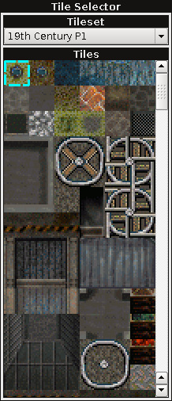

|  |
The combo box in the box marked "Tileset" is used to select which tileset is displayed below. The bottom box labled "Tiles" contains all the tiles within the current tileset. To select a tile for use simply left-click on it. You can also left-click and drag to create a box containing up to six tiles wide and six tiles tall, which will act as a pattern when drawing them on the map. Tiles may also be selected by right-clicking (right-click and drag for a pattern box) on any tile in the map editor portion. NOTE: Maps are not limited to just one tileset. They can use tiles from multiple tilesets at any one time. However, each project is limited to up to 256 tilesets, and each tileset can contain no more than 256 tiles. |